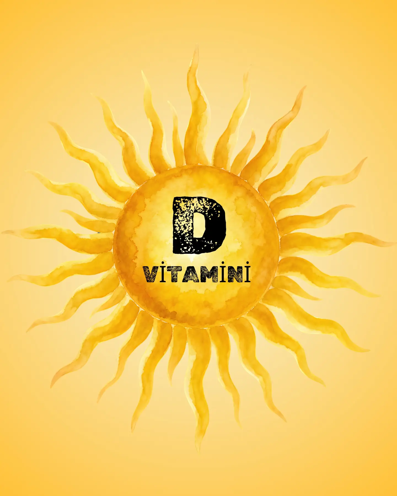
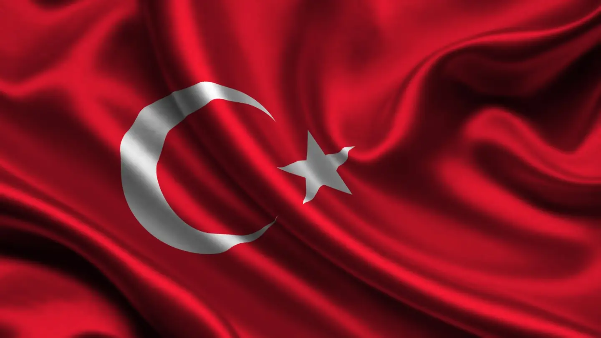

Gündem
Son açıklamalar ve tepkiler, tarih sırasıyla.

Gazilerimizin özlük haklarına kavuşması bizim için bir talep değil, bir onur meselesidir.
Bu vatanın bağımsızlığı, bu milletin huzuru ve bayrağımızın göklerde dalgalanması uğruna bedel ödemiş insanlara haklarını teslim etmek bir lütuf değildir. Devlet olmanın, millet olmanın ve vefa…

Erzincan Eczacı Odası Başkanı @EczBurak24 gençlerin desteğini sonuna kadar haketmiştir.
İlk destek açıklamamız Erzincan Eczacı Odası seçimleri için Eczacı Burak Sarıkaya'ya. Çalışmalarının devamını merakla takip edeceğiz.

1. önceliğiniz eczane kârlılığı…
4. maddede sıra Genç eczacılarda. Biz artık size söyleyecek bir şey bulamıyoruz. Ancak şunu unutmayın: Atatürk'ümüzün de dediği gibi, “Bütün ümidim gençliktedir.” Bizim de bütün ümidimiz genç…

Kâr amacı gütmüyoruz.
Bilgilendirme amaçlıdır. Zeytin veya ceviz tarlamız yoktur. (TAKVİYE VE İLAÇ ALMADAN DOKTORUNUZA VE ECZACINIZA DANIŞIN SAĞLICAKLA KALIN)

İnternet üzerinden takviye edici gıda satışına son verilmelidir. Takviye edici gıda…
İnternet üzerinden takviye edici gıda satışına son verilmelidir. Takviye edici gıda sektöründe faaliyet gösteren firmalar, acilen Sağlık Bakanlığı denetimine alınmalı ve gerekli onay süreçleri Sağlık…

Uzm.Ecz.Ahmet Nezihi PEKCAN
Uzm. Ecz. Ahmet Nezihi Pekcan 22.07.1961 Ankara doğumludur. 1977 yılında Gazi Üniversitesi Eczacılık Fakültesi’nde yüksek öğrenime başladı. 1981 yılında mezun olup Konya’da Pekcan Eczanesi mesul…

Helikopterin düşmesi sonucu şehit olan kahraman askerlerimize Allah’tan rahmet,…
Helikopterin düşmesi sonucu şehit olan kahraman askerlerimize Allah’tan rahmet, kederli ailelerine ve yakınlarına sabır ve başsağlığı diliyoruz. Aziz şehitlerimizin mekânı cennet, makamı âli olsun.…

Türk milliyetçiliğinden ve Atatürkçü düşünceden taviz vermeyen eczacılarımızı, 2013…
Türk milliyetçiliğinden ve Atatürkçü düşünceden taviz vermeyen eczacılarımızı, 2013 öncesi veya sonrası ayrımı yapmaksızın aynı çatı altında bir araya getirmeyi hedefliyoruz. Genç meslektaşlarımıza…

🎁 ECZACI DİRENİŞİ ÇEKİLİŞİ BAŞLIYOR!🇹🇷
Tarihe, kültüre ve Türk dünyasının köklü mirasına ilgi duyanlar için güzel bir sürprizimiz var! Atölye Mahirayi iş birliğiyle gerçekleştirdiğimiz çekilişimizde **3 takipçimize birbirinden özel…
TEB Bölgelerarası Toplantısı Trabzon’da gerçekleştirilecek.
Emin olduğumuz tek bir şey var: Gençlerin yine konuşulmayacağı… Ancak bu kez hak veriyoruz. Çünkü gıda takviyesi meselesinin zincir eczane tartışmasına bağlanacağını kendileri de beklemiyordu.…
Antalya'da Eczane Görünümlü 8 İşletmeye Milyonluk Ceza Uygulandı..
@antalyaeczaciodasi
Mesleğin ahlaklı yapacak olanlar Atatürk'ün bütün ümidim dediği Türk Gençleridir.
Söz meclisten dışarı eczacılık mesleğini bu hale getirenler ve toplumun eczacıya bakış açısı malumunuzdur. Alper abi gibi meslek büyüklerimiz de bizim için şüphesiz ki yol gösterici olacaktır.
TEŞEKKÜR EDERİZ SON 2 HAFTADA 1.5 MİLYON GÖRÜNTÜLENME ALDIK 🥳🥳🥳🥳
BİRLİKTE DAHA GÜÇLÜYÜZ 💪💪
Eczacılar Diş Hekimleri ve Mühendislerden
Sayın Cumhurbaşkanı Recep Tayyip Erdoğan beyfendiye çağrı: EROL ÖZVAR'ın açıklamaları skandaldır. Kabul edilemez. Görevden affını istemelidir.
Eczacılar Diş Hekimleri ve Mühendislerden
Sayın Cumhurbaşkanı Recep Tayyip Erdoğan beyfendiye çağrı: EROL ÖZVAR'ın açıklamaları skandaldır. Kabul edilemez. Görevden affını istemelidir.
Saçlarınız dökülüyor diye aldığınız vitaminin, aslında saçlarınızı döken asıl sebep…
Saçlarınız dökülüyor diye aldığınız vitaminin, aslında saçlarınızı döken asıl sebep olabileceğini biliyor muydunuz? Klinik pratikte sıkça karşılaştığımız "Takviye Polifarmasisi" (aynı anda birden…

Eczacılar Diş Hekimleri ve Mühendislerden
Sayın Cumhurbaşkanı Recep Tayyip Erdoğan beyfendiye çağrı: EROL ÖZVAR'ın açıklamaları skandaldır. Kabul edilemez. Görevden affını istemelidir.
Eczacılar Diş Hekimleri ve Mühendislerden
Sayın Cumhurbaşkanı Recep Tayyip Erdoğan beyfendiye çağrı: EROL ÖZVAR'ın açıklamaları skandaldır. Kabul edilemez. Görevden affını istemelidir.
Eczacılar Diş Hekimleri ve Mühendislerden
Sayın Cumhurbaşkanı Recep Tayyip Erdoğan beyfendiye çağrı: EROL ÖZVAR'ın açıklamaları skandaldır. Kabul edilemez. Görevden affını istemelidir.
**T.C. SAĞLIK BAKANLIĞINA**
**Konu: İnternet Üzerinden İlaç Satışı ve Türkiye İlaç Takip Sistemi Dışında Olduğu Değerlendirilen Ürünlerin Satışı Hakkında Şikâyet** İnternet üzerinden gerçekleştirilen ilaç satışlarına ilişkin…
Değerli vatandaşlarımız, raporlu ilaçların doğrudan eczanelerden alınması uygulaması…
Değerli vatandaşlarımız, raporlu ilaçların doğrudan eczanelerden alınması uygulaması henüz başlamamıştır. İlaç temini için reçete zorunluluğu devam etmektedir.
ORDU'DA İLAÇ SORUŞTURMASI DERİNLEŞİYOR: ARALARINDA BAŞHEKİM DE VAR, 11 ŞÜPHELİ ADLİYEDE!
Ordu'nun Ünye ilçesinde reçeteli ilaçların usulsüz temini ve satışı iddiasıyla yürütülen soruşturma genişletildi. İlk operasyonda gözaltına alınan ve aralarında eski Ünye Devlet Hastanesi Başhekimi…
Zaten kolay kolay atanamıyoruz. Biz atanamıyoruz, kadro bekliyoruz dedikçe tuzu kuru…
Zaten kolay kolay atanamıyoruz. Biz atanamıyoruz, kadro bekliyoruz dedikçe tuzu kuru olanlar sırf inat olsun diye atamalara başvuruyor. Özellikle 2013 öncesi meslektaşlarımızın bir kısmı bu durumu…
Eczacılardan Türk Eczacıları Birliği’nin son dakika gençlikten habersiz şekilde eyleme…
Eczacılardan Türk Eczacıları Birliği’nin son dakika gençlikten habersiz şekilde eyleme katılmalarına tepkiler geliyor.
Eczacılardan Türk Eczacıları Birliği’nin son dakika gençlikten habersiz şekilde eyleme…
Eczacılardan Türk Eczacıları Birliği’nin son dakika gençlikten habersiz şekilde eyleme katılmalarına tepkiler geliyor.
Eczacılardan Türk Eczacıları Birliği’nin son dakika gençlikten habersiz şekilde eyleme…
Eczacılardan Türk Eczacıları Birliği’nin son dakika gençlikten habersiz şekilde eyleme katılmalarına tepkiler geliyor.
Merhabalar sevgili takipçilerimiz,
Mesleki sorunlarımızı özgürce konuşabilmeniz, düşüncelerinizi ve önerilerinizi paylaşabilmeniz için Özgür Köşe’yi açıyoruz. Genç, yaşlı, öğrenci veya meslektaş fark etmeksizin herkesin sözüne yer…
Eczacılardan Türk Eczacıları Birliği’nin son dakika gençlikten habersiz şekilde eyleme…
Eczacılardan Türk Eczacıları Birliği’nin son dakika gençlikten habersiz şekilde eyleme katılmalarına tepkiler geliyor.
Eczacılardan Türk Eczacıları Birliği’nin son dakika gençlikten habersiz şekilde eyleme…
Eczacılardan Türk Eczacıları Birliği’nin son dakika gençlikten habersiz şekilde eyleme katılmalarına tepkiler geliyor.
Eczacılardan Türk Eczacıları Birliği’nin son dakika gençlikten habersiz şekilde eyleme…
Eczacılardan Türk Eczacıları Birliği’nin son dakika gençlikten habersiz şekilde eyleme katılmalarına tepkiler geliyor.
Eczacılardan Türk Eczacıları Birliği’nin son dakika gençlikten habersiz şekilde eyleme…
Eczacılardan Türk Eczacıları Birliği’nin son dakika gençlikten habersiz şekilde eyleme katılmalarına tepkiler geliyor.
Türk Eczacıları Birliği’nin Sağlık Bakanlığı önünde gerçekleştirilecek toplanma…
Türk Eczacıları Birliği’nin Sağlık Bakanlığı önünde gerçekleştirilecek toplanma eylemine katılma kararı almasını olumlu karşılıyoruz. Ancak mesele yalnızca bir eyleme katılmış olmak değildir. Bu…
Diş Hekimleri ve Eczacılar Sağlık Bakanlığı önünde !
Türk Eczacıları Birliği duyuru yapmadan ani bir kararla katılım sağladı.
Çözüm önerilerimiz de gayet açık:
1. 65 yaş üzerindeki eczacılar için emekliliğe geçiş düzenlemesi yapılmalı, gençlere meslekte alan açılmalıdır. 2. Yardımcı eczacılık uygulamasının kontenjanı azaltılmalı, ardından uygulama…
Mesleğin haysiyeti, gençlerin susmasıyla korunmaz. Gençlerin emeğini sömürerek,…
Mesleğin haysiyeti, gençlerin susmasıyla korunmaz. Gençlerin emeğini sömürerek, geleceğini ipotek altına alarak, onları yıllarca bekleme sıralarına mahkûm ederek de korunmaz. Bizim derdimiz geçmişin…
Çözüm önerilerimiz de gayet açık:
1. 65 yaş üzerindeki eczacılar için emekliliğe geçiş düzenlemesi yapılmalı, gençlere meslekte alan açılmalıdır. 2. Yardımcı eczacılık uygulamasının kontenjanı azaltılmalı, ardından uygulama…
Çözüm önerilerimiz de gayet açık:
1. 65 yaş üzerindeki eczacılar için emekliliğe geçiş düzenlemesi yapılmalı, gençlere meslekte alan açılmalıdır. 2. Yardımcı eczacılık uygulamasının kontenjanı azaltılmalı, ardından uygulama…
Zincir Eczane Mi ? İSTEMİYORUZ KALSIN !
Zincir eczane fikrini sizce gençler gerçekten mantıklı buldukları için mi istiyorlar? Hayır! Gençleri bu noktaya getiren şey çaresizliktir. Durum artık işler acısı bir hâl almıştır. Genç eczacılar,…
Mesleklerin kaymağını sıyıranlar, gençler için olumlu sonuçlar doğurabilecek bir yasa…
Mesleklerin kaymağını sıyıranlar, gençler için olumlu sonuçlar doğurabilecek bir yasa tasarısını gençlerin hayatını daha da zorlaştıracak hâle getirip yine aynı şekilde “dostlar alışverişte görsün”…
Radikal sorunlar radikal düşünceleri beraberinde getirir.
Pastadan pay vermiyorsanız ortada pasta kalmaz.